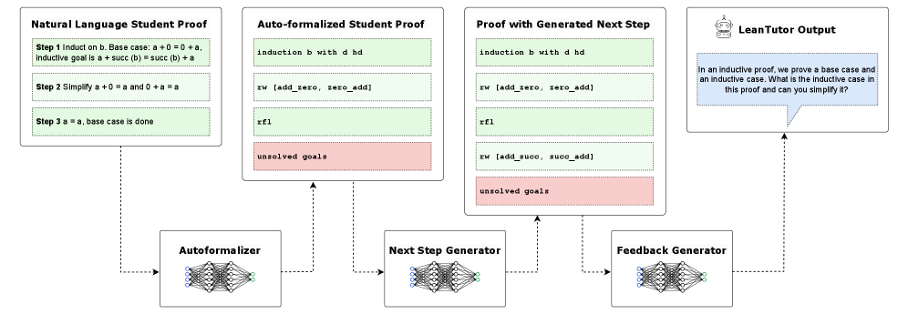

LeanTutor uses Lean as a proof checker, autoformalizing student natural-language proofs into Lean and generating verified next steps.
Abstract
This paper considers the development of an AI-based provably-correct mathematical proof tutor. While Large Language Models (LLMs) allow seamless communication in natural language, they are error prone. Theorem provers such as Lean allow for provable-correctness, but these are hard for students to learn. We present a proof-of-concept system (LeanTutor) by combining the complementary strengths of LLMs and theorem provers. LeanTutor is composed of three modules: (i) an autoformalizer/proof-checker, (ii) a next-step generator, and (iii) a natural language feedback generator. To evaluate the system, we introduce PeanoBench, a dataset of 371 Peano Arithmetic proofs in human-written natural language and formal language, derived from the Natural Numbers Game.
Problem
Students increasingly use LLMs for mathematical help, but these systems are not pedagogically designed: they give away answers, produce errors without detection, and cannot verify correctness of student work.
Approach
LeanTutor combines LLMs with the Lean theorem prover in three modules: (1) an autoformalizer that translates natural-language student proof steps into Lean for verification, (2) a next-step generator that produces feasible tactics, and (3) a natural language feedback generator. The system is evaluated on PeanoBench, a new dataset of 371 Peano Arithmetic proofs with paired natural-language and Lean formalizations derived from the Natural Numbers Game.

Figure 1: LeanTutor is comprised of three modules: an autoformalizer that automatically formalizes an NL student proof into Lean step-by-step; a next step generator that generates a next feasible tactic for the student proof; and a natural language feedback generator that generates guiding feedback to help the student progress towards a correct proof.
Results
Step-by-step autoformalization with a staff solution achieves 56.8% correct tactics and 18.0% correct proofs on correct inputs, and 30.1% on incorrect proofs. The system can detect errors in student proofs through failed Lean compilation and provide targeted pedagogical feedback.